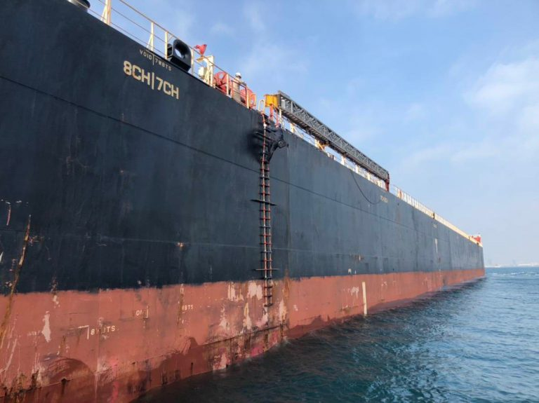
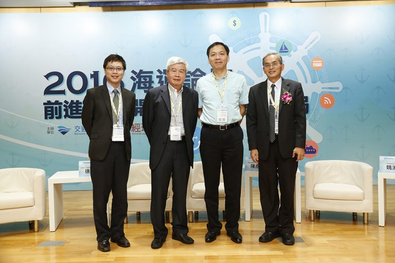

洪靖淳
2019/5/02
【專題記者李冠杰、洪靖淳、高海葳、張庭瑀、蔡明衡綜合報導】台灣四面環 海，每天都有大大小小的船經過或靠港停泊，這些船隻不僅是台灣的經濟命脈 ，更是與世界交流的第一線。但台灣複雜的港口地形對初來乍到的外籍船隻是 不小的考驗，這時候引領船隻進港的英雄——引水人便扮演著至關重要的角色 。每次船隻順利出航的背後靠的是資深引水人的豐富經驗，不僅僅是大型遊輪 ，一艘艘裝滿貨櫃的大小貨櫃船也都得仰賴引水人的細心指引才能順利地進出 港口。
4月20日下午五點，停靠在基隆港的盛世公主號準備啟航前往沖繩，該船隻重達14萬 噸、長330公尺，巨大的船身佔盡眼前視線。 圖／洪靖淳攝「看清楚！這種船可不是天天有的。」領港船陳船長興奮地說。停靠在基隆港 的盛世公主號佔據眼前大半視線，潔白的船身、雄偉的外貌、十幾層樓的高度 令人嘆為觀止。然而這艘長330公尺，重達14萬噸的船隻要進出基隆港卻不是 件容易的事情，需要三位熟悉港口形勢的人指引，前往錨地（註1）掉頭，才能 順利出入港口。
（註1）錨地：指有天然掩護或人工掩護條件能抵禦強風浪的水域，船舶可在此錨泊、 等待靠泊碼頭或離開港口。
4月20日傍晚，基隆港引水人辦事處主任方信雄帶領其他兩位引水人一同參與 盛世公主號進出港的任務，早上5時靠岸，下午5時一到，盛世公主號便鳴笛準 備啟航。只見引水人們俐落地由領港船跳上由盛世公主號所放下來的繩梯，以 飛快速度爬上船，教導船長如何出入港。沒有他們，船隻可能會觸礁、發生碰 撞。結束任務回到領港船上的方信雄，扶著欄杆和甲板上的乘客揮手道別，看 著船隻漸行漸遠。「最愉快的就是看到這麼多客人，我們把他們送出去，再把 他們接進來，這就是最大的享受啊！那很實質的，我們對社會上一點點的貢獻 。」方信雄訴說著自己的工作內容，臉上掛著滿足的笑容。
我們跟著方主任和其他引水人一同搭小船前往盛世公主號，從下午四點出發， 到整個引領盛世公主號出港的作業完成歸來已經六點多。主要的過程是船頭由 兩位引水人帶領船長駕駛船隻，而船尾則由一位引水人負責照應，船隻由基隆 港深處緩緩地倒退至水域較寬闊的錨地，接著將船頭轉向大海則任務完成，這 時我們所搭乘的小船便前去盛世公主號旁邊接引水人下船，雖然無緣觀看船上 引水人和船長溝通的過程，但透過這次經驗，我們也切身體會到，要讓巨大的 盛世公主號在狹小的基隆港中倒退順利出航真的是一件不容易的事情。 基隆港引水人辦事處主任方信雄，領完盛世公主號出港後，藉由繩梯下到領港船，結 束任務。 圖／洪靖淳攝
基隆港引水人辦事處主任方信雄，領完盛世公主號出港後，藉由繩梯下到領港船，結 束任務。 圖／洪靖淳攝考試重實務經驗 引水人資格難取得
指引船隻進出港雖讓引水人備受旁人敬佩，但要成為引水人其實並不容易，「 我想考也不能考，不是人人都有資格當上引水人的。」領港船陳船長感嘆地說 。欲考取引水人執照，除了年齡須在50歲以下，還需擔任3000噸以上船舶的船 長達三年以上資歷。現職高雄港引水人胡延章進一步補充，成為船長前，必須 先擔任大副兩年才有資格應考船長；而要考大副，還得先有三副、二副一年半 以上的海上資歷，「所以當你真正做到船長時，你前面三、二和大副（註2）的 時間可能就超過十年了。」
（註2）大副，二副（資深船副）和三副（資淺船副）皆屬船副的一種，屬於一船舶艙 面（甲板）部門之高等海員（中華民國交通部正式名稱為甲級船員），為一船舶之主 管人員，並依船長命令進行管理和值勤，負責航行當值、主管事務、督率海員等工作。
 高雄港引水人胡延章擔任三副時，受到當時的船長賞識，加上自身努力，二副、大副 和船長考試都是第一名，讓他成為當時台灣最年輕的船長。 圖／蔡明衡攝
高雄港引水人胡延章擔任三副時，受到當時的船長賞識，加上自身努力，二副、大副 和船長考試都是第一名，讓他成為當時台灣最年輕的船長。 圖／蔡明衡攝「我自己算是運氣很好，35歲就考到引水人。」胡延章如此說道。他當三副時 ，船長便一路提拔他，他也不負船長期望，每每國家考試都考第一名，最後在 28歲時成為台灣當時最年輕的船長。在成為引水人的路上，胡延章雖然走得順 遂，但他仍謙虛地說：「這一行很看個人機遇，即使你考上大副，船公司也不 一定會馬上用你，可能要你繼續做三、二副，如此一來，許多有資格考引水人 的人年紀也不小了。」
目前我國考試院每兩年舉辦一次引水人專業證照考試，每次只得報考一個港口 ，一旦考上僅能在該港口工作。考試除了國文、憲法等普通科目外，還包括專 業科目，如船舶操縱、引水相關法規、應考港口的港灣詳情（包括水道方位、 水深、流向、潮汐等及其變化情形）、專業英文和體能。而考試項目中，體能 和專業英文是其他海上職業證照裡較為少見的項目。加考體能是因為引水人在 上大船時，必須攀爬繩梯，因此考生體能須達到一定標準。此外，有鑑於引水 人在領港時，須不斷與來自各國的船長溝通，國際海事組織（International Maritime Organization, IMO）更將英文定為工作語言（Working Language），所以英文對引水人來說也相當重要。胡延章表示，當初考引水人 時，花最多心力準備的項目就是英文，還特別報名台大作文班。
方信雄時常在早上四點到基隆港中游泳，下午也會利用空閒時間打球，他認為持續運動是維持良好工作狀態的最佳方法，而且在無形中運動也能鍛練個人的意志。成為引水人前，不論擔任何種職位，長年在海上工作是誰也躲不掉的過程。方 信雄提到，在過去電話不發達的時代，能與家裡聯絡的機會極少，有一次他從 美國打電話回家給妻子和小孩，「家中孩子說：『媽媽，有個叔叔找你。』這 個多悲哀啊。」除剝奪與家人相處的時光，海上工作也讓一個剛畢業的年輕人 與世隔絕，完全脫離陸地生活。「如果待在船上（當船長）一個人22歲畢業， 做到65歲退休，在船上四十幾年，那回到陸上會怎麼樣？很可憐、很孤單、沒 有人際關係，談的話跟人家不一樣、搭不上邊。」
海上工作生死一線 高報酬背後的艱辛
除考試難度極高、與家人相處時間少外，引水人的工作也往往伴隨著極高的風 險。「我自己就從船上掉下來過，但是掉在陸地上，那才真的是最扯的事。」 現職高雄港引水人胡延章回憶，十年前曾經領過一艘約4、5000噸的船進港。 那時領港結束準備下船，船員卻因偷懶不想放置旋梯，因此詢問是否可以爬繩 梯下船。「我當時想說無所謂，反正只有我下船，用繩梯就好。」他笑著繼續 分享，當他跨上繩梯那刻，固定在船上的繩梯突然鬆開，胡延章從五公尺高的 船上墜落，一股刺痛感如電流般從尾椎直達腦頂，他身體向後一倒，失去意識 。待他回神，發現自己幸運地掉落在碼頭邊緣，距離落海只有些微差距。由於 壓迫性骨折，胡延章休息整整半年，加上一年的時間復健，才終於重返工作崗 位。但此次經驗並沒有打消他對工作的熱情，反而讓他往後上下船隻更加小心 。
 胡延章在進行領港任務時的模樣，引水人得攀爬繩梯到達船上，指引船長如何進出港口，高聳的船身和變化莫測的海象都為任務帶來極高的風險。 圖／胡延章提供此外從領港船登上大船時，他們還需肩負著國防第一線。胡延章指出，引水人 登上船後，必須先觀察船長和船員舉動，並隨時回報海洋委員會海巡署等官方 單位，以保障港口安全。他進一步解釋，「今天我們跟中國的關係如果更緊張 ，他可能就派一艘船過來碰撞碼頭，像敢死隊一樣，那我們港口就被封掉了 。」
工作雖然危險，但引水人也十分享受將船隻穩穩靠岸後，所得到的榮譽感和船 員們敬佩的目光。胡延章談到自己當船長時，曾問過外國引水人從事這份工作 的原因。「Very important for reputation !（榮耀至上！）」外國引水人當時如 此回答，也讓胡延章了解為何引水人是討海人心中的至高榮譽。
基於引水人職業高門檻、高風險的特性，引水人的薪水也十分優渥。方信雄表 示，基隆港引水人薪水是以船的噸位來計算，船越大收入越多。「我們一個月 （薪水）差不多和總統一樣，50萬。」他補充，高雄港規模較大，比起基隆港 也有更多船隻進出，因而該地引水人每月收入可高達80萬。除報酬高外，引水 人也擁有許多假期，目前基隆港引水人採「做二（一天早班加一天晚班）休一 」，也就是每九天能休息五天的制度，而高雄港則採取彈性排班。收入高及休 假多成為多數人對引水人的印象，但卻往往忽略了他們背後所需承受的風險和 犧牲。
雖然引水人擁有令人稱羨的高報酬，但胡延章對此十分低調，也與家人說，對外人就說自己在港務局工作就好。法律規範不周 引水人就業安全疑慮多
引水人一個月動輒數十萬的收入雖然看似豐厚，但由於引水人僅是透過國家考 試取得證照，並非公務人員，因此無法享有國家公務人員體系的福利和保障。 胡延章指出，引水人並沒有底薪或是退休金，「我們的薪資就是接越多賺越多 ，像是業務那樣按件計酬，若沒有船隻進港，引水人便不會有收入。」此外， 為了方便和進出港的船公司接洽，引水人會聯合籌組各港口的引水人公會，由 於公會屬於民間機構，引水人需自行負擔租金、電費和人事成本，這些因素皆 是引水人工作背後的隱藏成本。
 高雄引水人辦事處，由於引水人不受公務員體系保障，必須自行籌組辦事處，接洽國內外的船隻。 圖／蔡明衡攝
高雄引水人辦事處，由於引水人不受公務員體系保障，必須自行籌組辦事處，接洽國內外的船隻。 圖／蔡明衡攝除不受國家公務員體系保障外，引水人的安全也並未受到國家制度完善的照顧 。目前國際海事組織針對海上工作及港口運作有一套法律規範，得以加強引水 人的安全保障。然而，由於主權問題，台灣並沒有加入該組織，對於海上、港 口作業標準也無嚴密的法律規範。對此，方信雄表示，因為缺乏法律規範，造 成船隻過大、次標準船（註3）充斥，「那對我們來講，次標準船很危險，設備 很不安全，繩子快斷了你叫我爬，他就是鑽法律漏洞到我們國家啊。」
（註3）次標準船：所謂次標準船，通常係指該船舶之安全有問題，或該船舶之狀況能 造成海洋環境之威脅，或可能危及船上船員福利者。 。」
此外，方信雄也指出，船隻在過去最長僅兩百公尺，現今因為商業壓力，船越 造越大，船身三百公尺甚至更大艘的都有，但港口地形卻不會改變，「就像大 卡車卡在巷子裡面，所以要倒車，那這個就是超過我們港口的容量。這就是商 業跟安全在交易，妥協就有風險在，超過港口負荷，就必須承擔（後果）。」 對此，方信雄建議，政府應設立船隻標準及大小的相關規定，過大的船隻應前 往高雄港，而不是讓他們進入基隆。
熱情不隨時間改變 引水人將一生獻予海洋
隨著時代變遷，人類造船技術日趨進步，船隻越造越大，使引水人工作難度增 高，時時處於危險之中。為保障自身安全，多數引水人養成運動習慣以應變緊 急狀況，但也有不少引水人選擇急流勇退，但退休仍無法抹滅他們對海洋的熱 愛。
1976年從國立臺灣海洋大學航海學系（現為商船學系）畢業的徐國裕，縱橫海 洋近40年，見識過許多大風大浪。這樣的海上男兒從引水人的職位退休後，生 活依然離不開海洋。徐國裕常常奔波於國立臺灣海洋大學和國立高雄海洋科技 大學，在兩間學校向年輕一代傳授知識，甚至還受邀到中國大連海事大學擔任 客座教授。除此之外，身為中華海洋事業協會榮譽理事長的他，在許多兩岸海 運論壇及學術研討會上，也經常可見他的身影。他期許自己，在退休後可以盡 己之力，將海上所學回饋社會。
 徐國裕（左二）退休後，仍致力於參加各式與「海」相關的學術場合，不遺餘力的教導後輩，盡己所能回饋社會。 圖／徐國裕提供引水人為港口與船隻的橋梁，工作雖然充滿艱辛和挑戰，但少了他們，船隻便無法順利進出港。引水人作為港口背後的無名英雄一直默默地承擔起這份責任。每天看著載運國人辛苦成果的巨輪在自己的引航下出港，協助國外物資入港，引水人雖沒有獲得大眾掌聲，背後付出的喜悅卻不是單純的勞務薪資能夠比擬的。如同胡延章所說：「我每天領一艘船進港，每次所面對的考驗都不同，把船順利引入港後，船長感謝我，又可以施展操船技術，讓我感覺非常有存在的價值。」這也是為什麼他們總是堅守崗位，日復一日為此努力工作著。
採訪後記
引水人在台灣一直都是大眾感到陌生且神秘的職業，由於全台引水人人數不到一百人，工作環境也不是一般人會接觸到的，其實真的難有機會認識這個行業。這次採訪很幸運也很感謝三位引水人大方地分享自己縱橫海上和港口數十年的寶貴經驗，讓我們這些出生海島國家的孩子對海洋相關職業能有更深入的了解。
 洪靖淳
洪靖淳.jpg)